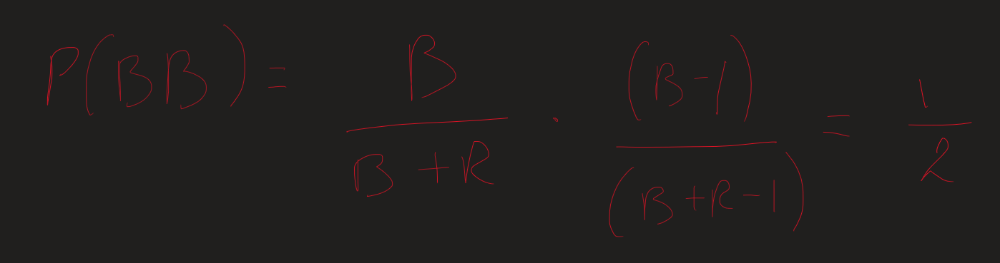
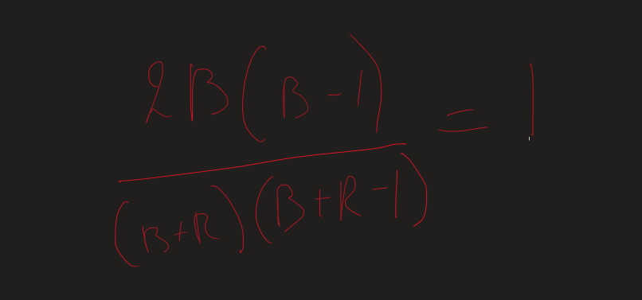
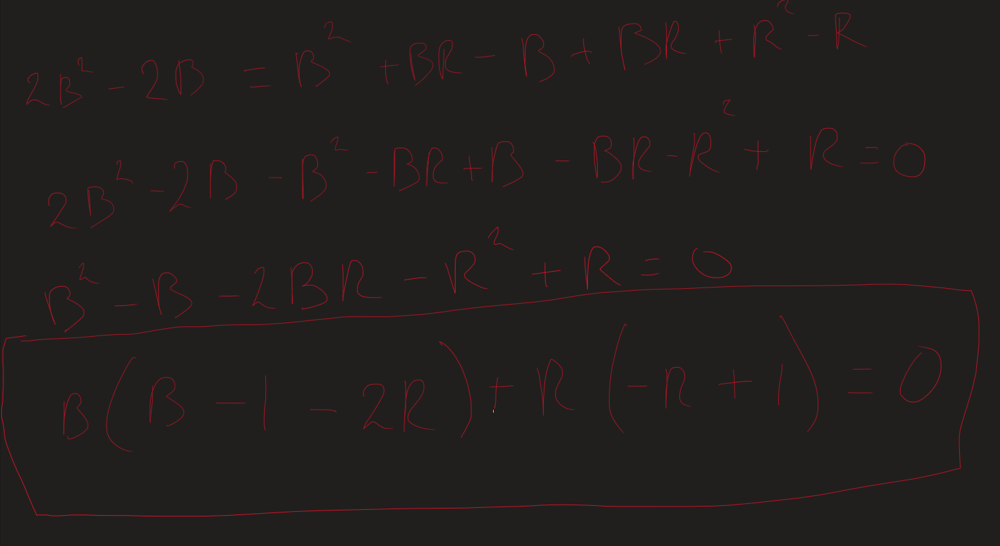
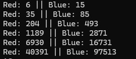

Project Euler
Project Euler probleem 100
Bekijk het originele probleem op Project Euler
Probleemstelling kort
In dit probleem heb je een doos met blauwe en rode schijven.
Je moet het aantal blauwe schijven vinden waarvoor de kans om twee blauwe schijven na elkaar te trekken exact 1/2 is, met een totaal aantal schijven groter dan 10^12.
Aanpak
Voor dit probleem heb ik eerst geprobeerd om het uit te werken.



Ik heb het eerst proberen te bruteforcen volgens de volgende formule uit de derde screenshot:
b * (b - 1 - 2 * r) + r * (-r + 1) = 0
Het probleem hierbij is dat het enorm lang kan duren, omdat het limiet 10^12 is.
Dus het volgende dat ik heb gedaan is enkele correcte waarden genereren om te zien of ik een verband zag in de reeks getallen.

Zoals je kan zien in de screenshot hierboven is het volgende rode getal gelijk aan:
rood_nieuw = 2 * blauw + rood - 1
En het volgende blauwe getal is gelijk aan:
blauw_nieuw = 2 * rood_nieuw + blauw
Waarbij het allereerste rode getal gelijk is aan 6 en het allereerste blauwe getal gelijk is aan 15.
De code is als volgt:
Rood: 313506783024 || Blauw: 756872327473 Uitvoeringstijd: 0.000091 seconden
Dus het antwoord op Project Euler probleem 100 is het aantal blauwe schijven:
756872327473